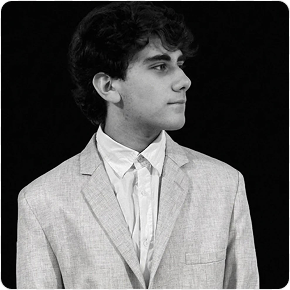
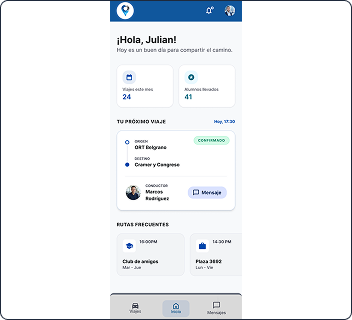
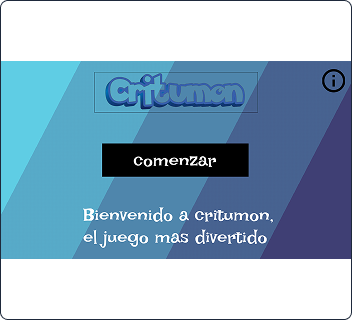
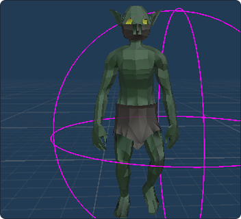

Período / 2024-2026
Formación
Institución ORT Argentina
Inicio en la carrera de Gestión y Analisis de datos en la UBA

Diseñador Digital y Programador
Ciudad Autonoma de Buenos Aires, Argentina
Programador apasionado por el mundo de la inteligencia artificial y el entrenamiento de modelos. Disfruto construir proyectos desde cero, experimentar con datos y mejorar resultados de forma constante. Me destaco por mi compromiso y mi facilidad para colaborar en equipo hacia objetivos comunes.



Plataforma colaborativa de movilidad escolar diseñada para que los alumnos coordinen viajes compartidos de forma segura y económica. Cuenta con verificación de perfiles, un tablero de solicitudes y rutas, y un chat interno para acordar puntos de encuentro y tarifas.
Ver proyecto


Simulador de combates por turnos inspirado en los juegos clásicos de Pokémon. Permite enfrentarse en partidas de dos jugadores o desafiar a un bot, recreando la estrategia, efectividad de tipos y selección de movimientos originales.
Ver proyecto


Videojuego de rol y aventuras en el que un príncipe convertido en sapo explora un mundo libre para rescatar a la princesa. Combina exploración con un sistema de combate estratégico por niveles (ataques normales y cargados), interfaz intuitiva para gestionar estadísticas y un sistema de progresión donde el jugador mejora su ataque, defensa y vida tras cada victoria hasta enfrentar al jefe final.
Ver proyectoPeríodo / 2024-2026
Institución ORT Argentina
Inicio en la carrera de Gestión y Analisis de datos en la UBA